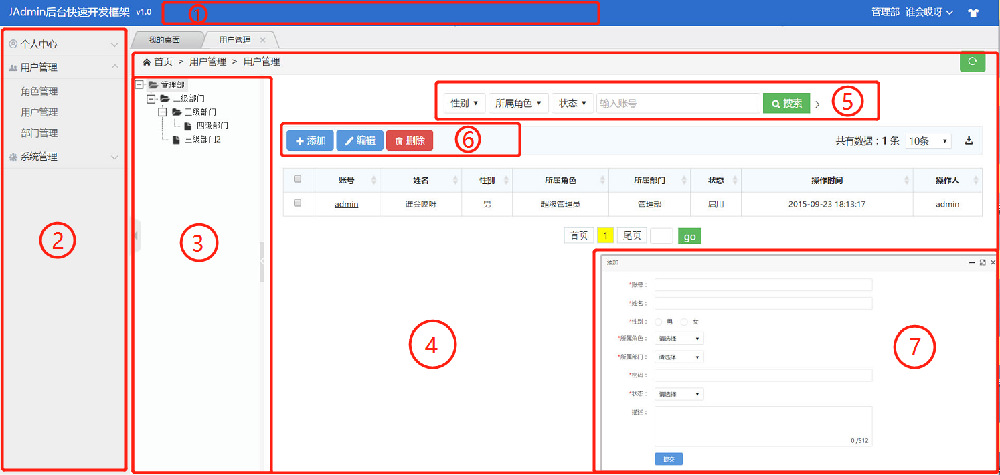
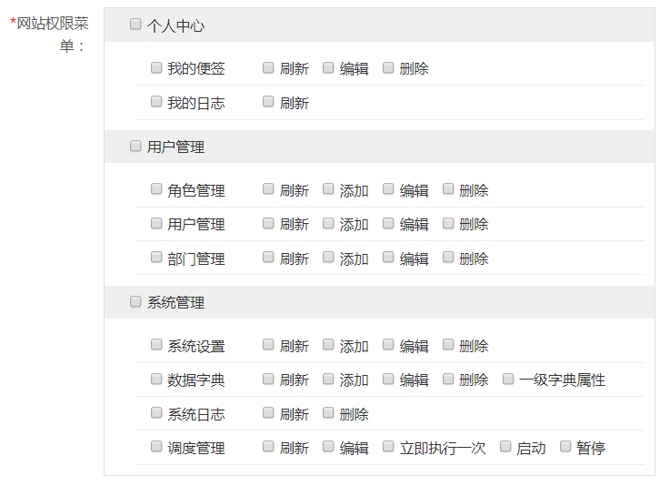

JAdmin的设计初衷是，在有数据表的情况下，快速开发后台管理系统，下图为后台列表页面：
如上图所示，1、2部分是系统的菜单栏，JAdmin只需要一个枚举、一个注解就可以定义菜单和页面：
system("", "#xe62b;"), // 一级菜单 ，一级菜单名称可以为空
userCenter(system, "用户中心", "#xe62b;"), // 二级菜单
@AdminPage(menu = AdminPageMenu.userCenter, name = "用户管理") // 页面
通用的列表界面，需要一个Controller和一个Javabean，Controller需要继承CommonListController《T extends AbstractValueObject》：
@Controller
@RequestMapping("/user") // 定义前台url访问的基础路径
@AdminPage(menu = AdminPageMenu.userCenter, name = "用户管理") // 定义页面名称和所属菜单
@FileConfig // jsp和js的相关配置
@DeleteMode(DeleteMode.UPDATE) // 定义删除策略为修改状态
@Tree // 声明为树形结构（对应页面第3部分）
public class UserController extends CommonListController {
@FormColunm(value = "姓名") // 声明该注解，在添加/编辑页面显示该字段（对应页面第7部分）
@TableColumn // 声明该注解，在列表页面显示该字段
public String name; // JavaBean中对应的字段
@FormColunm(value = "账号", edit = "false") // 不允许编辑
@TableColumn(search = true) //search为true，表示允许搜索（对应页面第5部分）
@UniqueColunm // 账号唯一性效验
public String account;
@FormColunm(value = "性别", selectCode = "sex") // selectCode 为数据词典
@TableColumn(search = true)
public String sex;
@FormColunm(value = "所属角色", selectCode = "userRole")
@TableColumn(search = true)
public String roleId;
@FormColunm(value = "所属部门", selectCode = "org")
@TableColumn
public String orgId;
@FormColunm(value = "密码", encode = "des", edit = "false") // 设置该字段为 des加密，并且编辑时，不可见
public String password;
@FormColunm(value = "状态", selectCode = "billStatus")
@TableColumn(search = true)
public String billStatus;
@TableColumn(value = "操作时间")
@InitDefaultColunm // 声明该主键后，添加时会自动默认值，operateTime为关键词，将默认当前时间戳
public String operateTime;
@TableColumn(value = "操作人")
@InitDefaultColunm
public String operatorId;
@InitDefaultColunm("0") // 声明该主键后，添加时会自动默认0
public String isDelete;
}
页面中的第6部分，是页面的按钮组，列名页面默认显示“添加”、“编辑”、“删除”3个按钮，框架还自带了“详情”、“审核”2个按钮， 用户可以通过@AdminPageNoButton注解， 自定义显示哪些按钮。用户还可以通过@AdminPageButton注解自定义按钮。
项目启动时，会自动扫描包，获得菜单、页面和按钮，用户可以在角色管理页面，随意分配权限：
